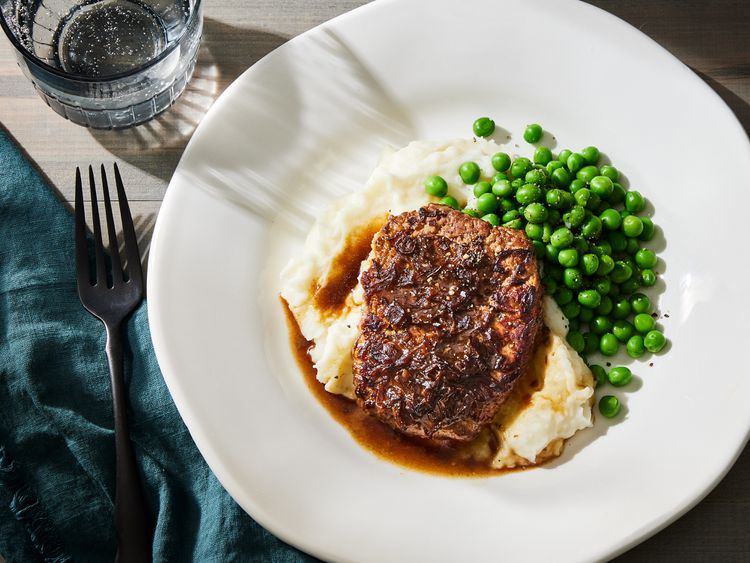

Steak

Easy at home steak recipe!
Ingredients
- 4 1/2 lb. steak cubes
- 1 10 oz. can of condensed french onion soup
Recipe steps
- Gather all ingredients. Preheat oven to 350 degrees
-
Sear steaks in a large skillet over medium heat, 2-4 minutes each side
-
Transfer steaks to a 9x13-inch baking dish. Pour condensed soup over
top.
-
Bake in the preheated oven until tender and slightly pink in the center,
about 1 hour
Home